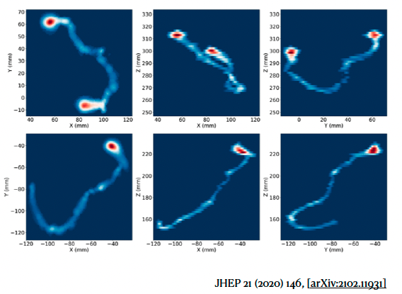

Fanal, a neutrino-less beta double decay search
Contents
Fanal, a neutrino-less beta double decay search#
Objectives#
Do a search for double-beta neutrino-less decays, \(\beta\beta0\nu\), in \(^{136}\mathrm{Xe}\) using mock detector data.
Learn the different steps in a typical “rare decay” seach analysis in a High Energy Physics, HEP, collaboration.
Dynamic#
Students groups in collaborations
Each collaboration:
select an student as spokeperson
selects its name from: alpha, beta, gamma, epsilon, delta, and accesses its detector mock data
performs a \(\beta\beta0\nu\) search following these notebooks as a guidelines
presents its resuls in a oral contribution and writes an article.
Physics#
One of the most relevant questions still open in Particle Physics is if the neutrino is its own anti-particle, if it is Majorana.
The only viable experiment to determine if the neutrino is Majorana is to observe a \(\beta\beta0\nu\) decay, an hypothetical decay where a nucleus simultaneously decays into two electrons with no emision of neutrinos.
This decay can only happen in few isotopes, i.e \(^{136}\mathrm{Xe}\).
The signal of the decay is quite clear:
The energy of the two electrons is equal to the \(Q_{\beta\beta}\) of the decay, for \(^{136}\mathrm{Xe}\), \(Q_{\beta\beta} = 2458\) keV.
The presence of two electrons, compared with the main backgrounds, which are single electrons.
The main background are single electron from photo-electric or comptom scattering of the gammas produced from the radioisotopes of the natural chains, \(\mathrm{U}, \mathrm{Th}\).
In the case of \(^{136}\mathrm{Xe}\) the main backgrounds are:
The 2.447 MeV energy of the \(^{214}\mathrm{Bi}\) photopeak.
The tail of the 2.615 MeV \(^{108}\mathrm{Tl}\) gamma interactions.
The NEXT experiment is a 100 kg High Pressure Xenon TPC, where signal events signature is a track of aproximatelly 10 cm composed of 2 electrons, which both extremes show a Bragg region, a larger deposition of energy, or “blob”, while the background, a single electron, only show a brag region, a blob, in on the extremes.
NEXT has also an excellent energy resolution of 1% FWHM at \(Q_{\beta\beta}\).
In addition NEXT is constructed with very high radio-pure materials, and have a Cu shielding.
NEXT is expected to operate 5 years at Laboratorio Subterráneo de Canfranc
Example of a two electron track from a pair conversion (top) and a single electron track from a Compton (bottom) obtained with the NEXT prototype, NEXT-White
 |
The main parameters of a neutrino-less \(\beta\beta0\nu\) esperiments are:
A large exposure in kg y (the total number of isotopes is proportial to the mass, kg) multipled by the time running time (years)
An excellent energy resolution (related with the \(Q_{\beta\beta}\) reconstructed peak)
A low number of background events (the number of bkg events expected for a given exposured in the energy Region of Interest, RoI, defined around the \(Q_{\beta\beta}\) for a given exposure)
The analysis#
In HEP usually the search for rare decays is done as a blind analysis.
The analysis must be defined using simulated and studied with calibration or blind data (data where the possible signal events have been removed) before accessing the full data set.
Blind analyses are designed in order to avoid human biases!
The data#
Each collaboration has access to the following data:
simulated data of \(^{214}\mathrm{Bi}\), \(^{108}\mathrm{Tl}\) and \(\beta\beta0\nu\) of \(^{136}\mathrm{Xe}\). These data will be used to define a signal selection, the RoI and to estimate the energy resolution in the \(Q_{\beta\beta}\) region
blind data, which contain no signal events. This data will be used to estimate the total number of \(^{214}\mathrm{Bi}\), \(^{108}\mathrm{Tl}\) and the number of bkg events expected after the signal selection in the RoI.
the full data, to estimate the number of signal events and the half-life of \(^{136}\mathrm{Xe}\), \(\mathcal{T}_{1/2}^{\beta\beta0\nu}(^{136}\mathrm{Xe})\).
The analysis steps#
Using simulated data, MC, to define the signal selection and the RoI. Compute the signal selection efficiencies in the differents MC samples \(^{214}\mathrm{Bi}\), \(^{108}\mathrm{Tl}\) and \(\beta\beta0\nu\), NB.
Using simulated data to estimate the energy resolution for the \(^{214}\mathrm{Bi}\), \(^{108}\mathrm{Tl}\) and \(\beta\beta0\nu\), NB.
Using blinb data to estimate the number of background events \(^{214}\mathrm{Bi}\), \(^{108}\mathrm{Tl}\) and the number of bkg events in the RoI, NB. Estimate also the uncertainty in the number of bkg events, NB.
Estimate the sensitivity of the experiment as a counting experiment. If in the RoI we observe \(n\) events, what is the limits or the cover interval at certain, 95%, C.L that we set on the \(\mathcal{T}_{1/2}^{\beta\beta0\nu}(^{136}\mathrm{Xe})\)? Has the experiment performed a discovery? NB
Using simulated data, define a fit method to extract from the data in an enlarged energy region the number of bkg events and signal, NB.
Access the full data, NB . Consider two analysis:
i) counting experiment: how many signal events are in your RoI?
ii) do a fit and extract the number of signal events
Estimate the limit or the cover interval at 95 %CL of the \(\mathcal{T}_{1/2}^{\beta\beta0\nu}(^{136}\mathrm{Xe})\).
Publish the results, prepare an oral presentation for a conference and an article to publish
Exposures#
Collaborations:
alpha: Exposure 500 kg y.
beta: Exposure 1000 kg y.
gamma: Exposure 1000 kg y.
delta: Exposure 3000 kg y.
epsilon: Exposure 3000 kg y.
References#
[1] NEXT IFIC web page, NEXT DIPC web page
[2] The NEXT Collaboration (J. Martín-Albo et al.), Sensitivity of NEXT-100 to neutrinoless double beta decay, JHEP 1605 (2016) 159.